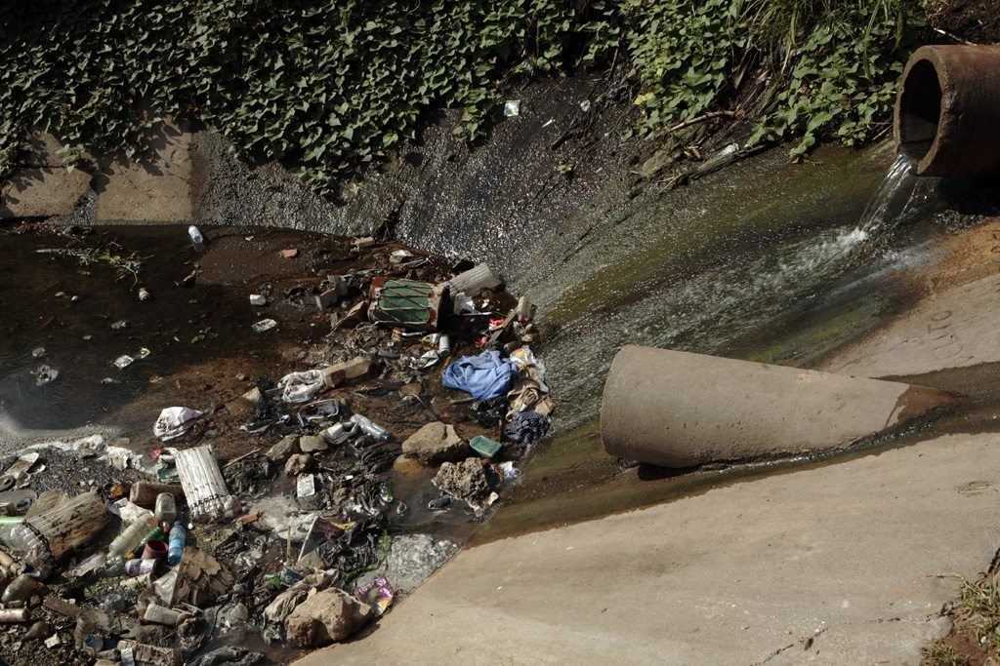

Engagée en faveur de l’accès à l’eau potable et à l’assainissement pour tous, SOLIDARITÉS INTERNATIONAL vient en aide aux populations frappées par les conflits, les épidémies et les catastrophes naturelles.
Notre charte
Notre Histoire
Première mission en Afghanistan où nous sommes toujours présents depuis 35 ans, de l’invasion des troupes soviétiques ,de la guerre civile aux Talibans, de l’intervention américaine au gouvernement de transition, de l’urgence à la reconstruction, avec et pour les Afghans.

1980
1992

En Irak, nous acheminons des convois de secours, quand un million de Kurdes fuient devant les troupes de Saddam Hussein. en 2003 et 2004, nous réhabilitons des stations de traitement de l’eau au sud de Bagdad. Début de mission dans les Balkans, dès l’origine du conflit en Bosnie et jusqu’en 2000.
Balkans, dès l’origine du conflit en Bosnie (jusqu’en 2000), puis au Kosovo (jusqu’en 2001), en Macédoine et Albanie pour les 800.000 réfugiés kosovars et enfin en Serbie auprès des réfugiés (Krajina, Slavonie).
1998
2001

Ouverture de mission au Libéria voisin pour 8 années. Au Soudan (Darfour), une mission difficile, dès février 2004 et jusqu'en 2009, pour secourir les populations chassées de leurs villages et victimes de nombreuses exactions.
Nouvelles missions humanitaires au nord Kenya, au Soudan du Sud, auprès des réfugiés birmans en Thaïlande, en République Centrafricaine (RCA), en Somalie, pays sans Etat victime d’un très long conflit, et enfin au Bangladesh frappé par un cyclone en novembre 2007.

2007
2010

Dès janvier, en Haïti pour secourir les sinistrés du terrible séisme qui a frappé ce pays parmi les plus pauvres du monde. Puis au Pakistan, en août, pour porter secours aux victimes des pires inondations dans l'histoire du pays.
Notre Mandat Humanitaire
O'Pour Tous

COORDONNÉES Association loi 1901 O'PourTous 89, RUE DE PARIS 92110 CLICHY LA GARENNE Tél. : +33 (0)1 76 21 86 00 N° de siret : 389 515 180 00054
© Legalstart.fr 2019.
Contactez Nous